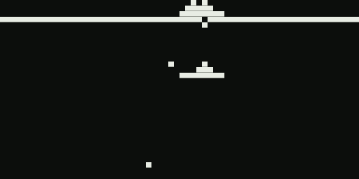
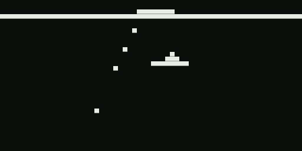

Super Sub
Campbell Fethers · DREAMER no. 7 (1981-03) p. 13 2K RAM



A bigger version of Sub with machine-code routines for speed and sound, where two torpedoes can be in flight and enemy ships drop depth charges, even a near miss can sink you. Each ship you sink adds one to your score, which is shown when the sub goes down.
Keys
4/5/6 surface, 8/A left/right, C/D/E dive, 0/1/2 fire (two torpedoes at a time); F restarts.
Files
| File | Version | Load | Run |
|---|---|---|---|
| Super Sub.c8 | main | 0200-04FF | C000 |
Listing as transcribed (with notes): super_sub.txt
Source
DREAMER no. 7 on archive.org, p. 13 (PDF page 15). Author: Campbell Fethers.
Corrections applied
- 02D9 87 -> B7 (87 is not a valid 6800 opcode; the noise routine reads and writes $8012; typewriter font confuses 8 and B).
Open doubts
- 03E5 INC $0015 should perhaps be $0014, but the carry is never reached.
- 02CA uses code bytes as sprite rows; left as printed.